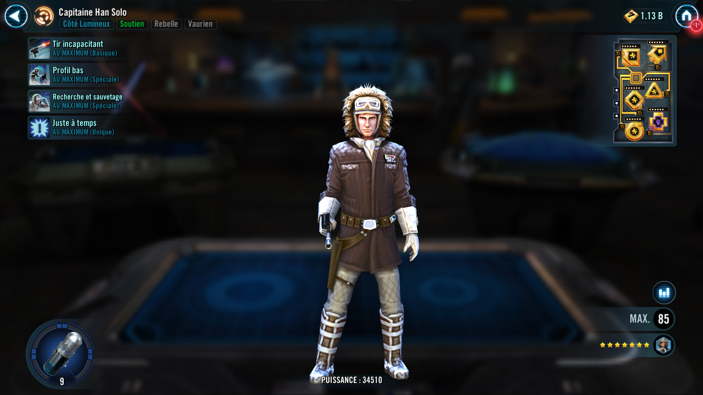
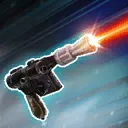
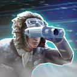

Captain Han Solo
Daring Rebel Support that risks himself to Revive allies and Daze enemies
Daring Rebel Support that risks himself to Revive allies and Daze enemies


Deal Physical damage to target enemy and inflict Daze for 2 turns. Empire targets can't Resist or Evade and take double damage from this attack. If Han has full health, gain 30% Turn Meter.
Dispel all debuffs on Han and target other ally, and they both recover Health equal to 40% of Han's Max Health and gain 25% Turn Meter. Then, if the target ally has full Health, they also recover 20% Protection.
This ability's cooldown is reduced by 1 whenever an ally suffers a debuff.

Revive a random defeated ally at 1% Health and 0% Turn Meter. If that ally is a Rebel, they recover 50% Health and gain 50% Turn Meter.
Captain Han Solo has +15% Critical Chance and +30% Critical Damage. In addition, at the end of his turn, Han recovers Health equal to 10% of his Max Health. If Han already has full Health, the least healthy ally is healed instead. Whenever Han uses his Basic attack he gains +10% Max Health (stacking) for 3 turns.